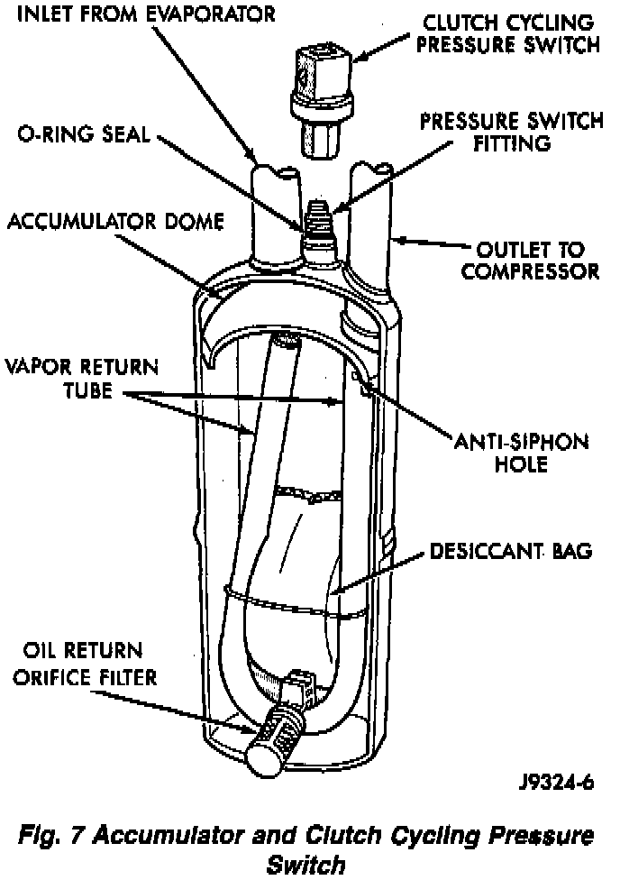

Accumulator HVAC: Description and Operation
Fig.7 Accumulator And Clutch Cycling Pressure Switch:

The accumulator is mounted in the engine compartment on the right side of the vehicle. The inlet tube of the accumulator attaches directly to the evaporator core outlet tube. Refrigerant enters the accumulator canister through the inlet tube. The liquid oil-laden refrigerant falls to the bottom of the canister which acts as a separator allowing refrigerant to enter the compressor suction line.
A desiccant bag is mounted inside the suction accumulator canister to absorb any moisture which may be in the refrigerant system.
A fitting located on top of the canister is used to attach the clutch cycling pressure switch. A long travel Schrader-Type valve stem core is installed in the fitting opening. This is done to prevent refrigerant loss when the clutch cycling pressure switch is removed.
CAUTION: DO NOT use this fitting to charge the system or to check suction pressure.
To check the accumulator for excessive refrigerant oil, the oil must be poured from the accumulator and the hoses (refer to Accumulator, Service and Repair). This is done through the pressure switch fitting when the Schrader-Type valve stem is removed.